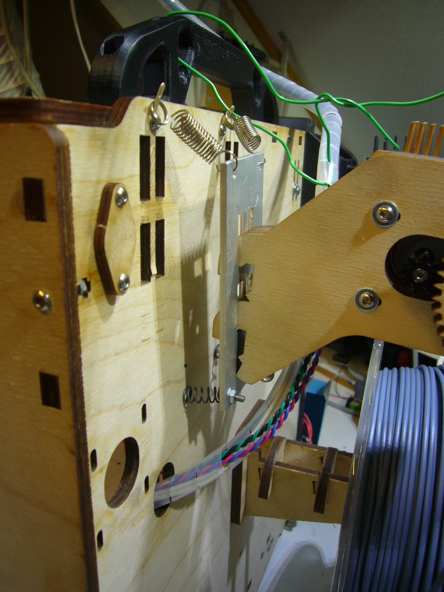
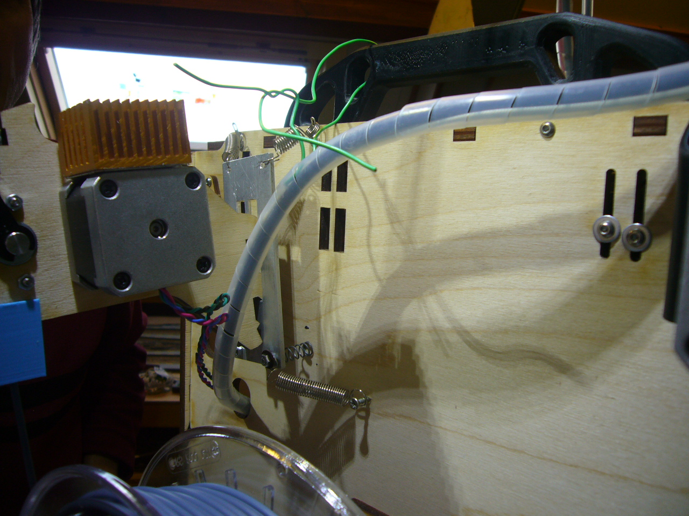

The noise of the extruder
After doing quite some prints I correlated some of the noise of the printer to the extruder motor. When you remove the extruder from the printer casing you clearly hear a reduction of noise. Also retraction is not that loud anymore. The trick is to isolate the extruder from the casing. You can find some holders on the internet to have a noise improvement. But since my printer was printer other objects I did not want to disturb it. So while printing I made a holding plate from aluminum and I was able to have it 'floating' in the air by using some springs.

As you can see it is sort of floating and the springs hardly carry any noise to the printer case anymore.

While printing is jumps up and down but I don't think it will harm the result. The nice thing is I am ride of the whining noise.